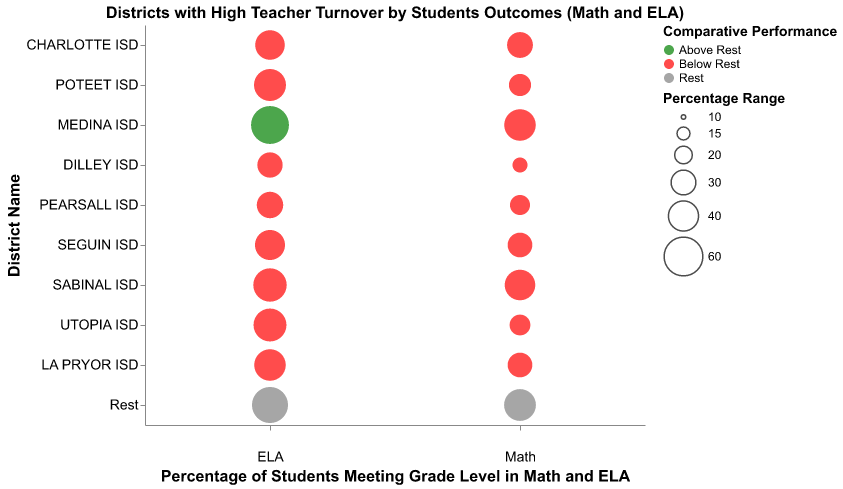

Examining the Link Between Teacher Characteristics and Student Test Scores: Evidence from Texas ESC Region 20
Our project examines the correlation between teacher characteristics (years of experience, types of degree held, salary, and turnover rates) and student test score outcomes in Texas. We aimed to determine which teacher attributes were most predictive of student achievement and consider what polices districts could implement to promote these attributes.
We use public data from Texas Education Service Center Region 20, accessed through the Texas Education Agency (TEA) website. Our district-level shapefile also came from TEA. We focused on one region of Texas in order to keep our findings more precise, and the region around San Antonio offers a rich diversity of backgrounds regarding urbanicity/rurality, race, immigrant status, English Learner status, and socioeconomic background. Our data was at the district level, providing 58 data points for each of our variables; this is one weakness of our project because our wealth of data was limited. In hindsight, it would have been more precise had we used school-level data instead of district data, but we anticipate that we would see very similar trends regardless. Additionally, we had difficulty deciding which indicators to pull from TEA because there are hundreds available, so we had to individually pull the codes only for the relevant variables.
We first demonstrated the correlation between students test scores and teacher attributes in our shiny dashboard, and we chose to look at average teacher years of experience per district versus the percentage of students meeting grade level in math or reading tests. This allowed us to compare the effects across different demographic groups. We found that all groups showed a positive correlation between teacher years of experience and test scores, in both math and reading.
Next, we compared looked at percentage of teachers with Master’s degrees and its link to student test scores. Ultimately, we found a stronger correlation between student outcomes and teacher years of experience than percentage of teachers holding a Master’s degree, emphasizing the importance of districts retaining teachers. See below for the graphs on both these correlations (left: years of experience; right: percentage holding advanced degrees).

Next, we examined the link between student outcomes and teacher turnover rates in each of the 58 districts in Region 20. We used the shapefile to create a map to examine regional differences and found nine districts with turnover rates above 30%, with a region average turnover rate of 19%. Dilley ISD holds the highest turnover rate.
Then, we took these highest turnover rate districts and looked at their relationship with student test scores. We find that, with the exception of Medina ISD, the high turnover rate districts perform worse than the average of the remaining 49 districts on the reading exam. When we look at math, all nine districts perform worse than the average of the other districts, and Dilley ISD stands out again with the worst performance on the math exam.

Lastly, we wanted to examine what might be causing the high turnover rates in these districts. We suspected that one factor might be teacher salaries, so we plotted teacher salaries in all 58 districts according to years of teacher experience. We use the bins provided by TEA for teacher experience level and calculated the average salary for each of these bins. We code for the color of the bubbles to correspond to whether that district’s average teacher salary is below or above this average. We then plot this against turnover rate and see that, generally, the districts with the highest turnover rates have below average salaries for their experience level.
To conclude, we have three main findings. First, years of teaching experience are more valuable than advanced degrees in promoting student achievement. Second, underperforming districts face higher teacher turnover rates, often losing high-quality teachers. Third, these high turnover districts also have less competitive teacher salaries, creating less incentive for teachers to stay.
This leads us to our policy recommendations. To promote student achievement, districts must retain high-quality teachers, which means decreasing turnover. We suggest first, districts should increase teacher compensation through strategic resource allocation like bonuses to teachers in high need areas, such as those that are low income, underperforming, have large English Learner or special education populations, etc. This will help retain high-value teachers. Second, districts should implement professional development programs (such as mentorship programs, built-in teacher collaborative time, ongoing training, or talent recognition program) alongside these raises, so teachers have the supports they need to succeed in their jobs. These interventions could help encourage attraction and retention of high-quality teachers, which will advance student achievement in the region.
In terms of future directions, we suggest utilization of a more finite level of data, such as school-level or student-level; this would provide more robust estimates of the link between student outcomes and teacher attributes. Second, future investigation could examine the link between these teacher attributes and other variables of student outcomes, such as graduation rate, chronic absenteeism rate, or percentage of students going on to pursue postsecondary education. Lastly, we suggest that for a more comprehensive idea of this link, future research widens the geographical scope of the investigation to include more Education Service Center regions, or even all of Texas.